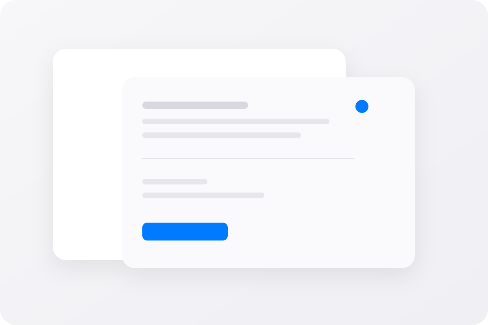
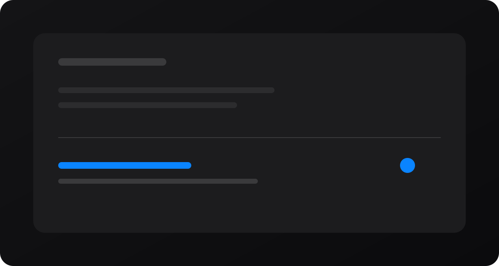

Capture
Write the thought while it is fresh. A single field opens, takes the note, and gets out of the way.
Lumen keeps your notes, plans, and decisions together. One workspace, one accent, nothing competing for your attention.
Works on your phone, tablet, and desktop. Your place stays in sync.

Three steps, each with a single job. Scroll to follow the sequence.
Write the thought while it is fresh. A single field opens, takes the note, and gets out of the way.
Link a note to the project it belongs to. Relationships stay visible without turning into a web of labels.
Start the next day from what is still open. Finished work moves out of view, never out of reach.
Details that remove friction instead of adding features.
Leave a note halfway and come back to the same cursor position. Undo covers the last change, not just the last action.
Text reflows at larger accessibility sizes. Rows get taller before they get denser.
Transitions follow the gesture and finish at a resolved state. Reduce Motion removes the travel, not the information.
One bright chapter in a calm system. The dark surface carries the review view, then hands you back to the light.

Open Lumen, write one line, and let the rest wait for you.
Back to the top